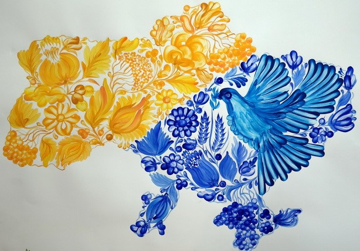
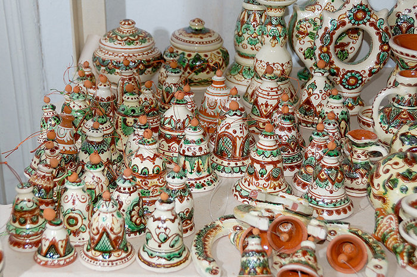
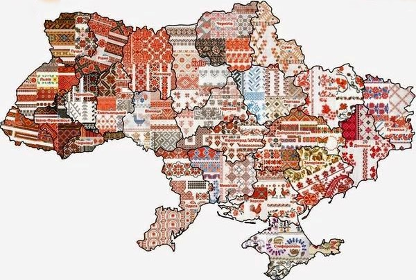

Що таке народні художні промисли?
Народні художні промисли України — це відображення унікальної культури, майстерності і естетики нашого народу. Вони включають мистецтва створення предметів побуту та декору, що мають багатовікові традиції.
Види народних промислів
- Петриківський розпис
- Гончарство (Косівська кераміка, Опішнянський посуд)
- Вишивка
- Писанкарство
- Ткацтво та килимарство
- Художнє різьблення по дереву
- Ковальське мистецтво
Галерея прикладів


